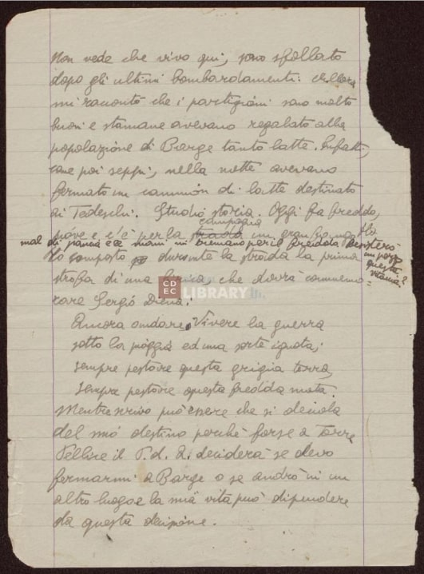
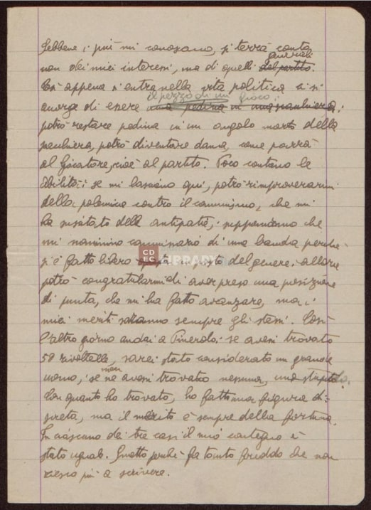
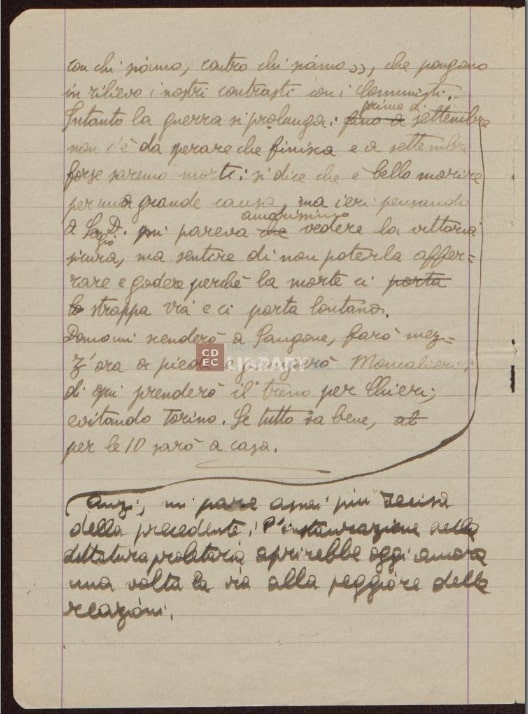

Codifica
Edizione universitaria del Giugno 2023 per il progetto d'esame del corso di Codifica
di testi
Curatore:
Angelo Del Grosso
Codifica opensource disponibile sul GitHub di Gabriele Isola
Manoscritto
Istituzione:
Centro di documentazione ebraiaca
Luogo:
Italia, Milano
Supporto:
Diario in pagine di carta
Grandezza:
171 pagine e 1 foglietto
Condizioni:
Alcune pagine presentano degli strappi o sono leggermente rovinate, in generale il
diario è in buone condizioni
Tipo scrittura:
Scritto a mano da Emanuele Artom con un'accompagnamento scritto a mano dalla madre
Amalia Segre
Pagina 1
1
«Non vede che vivo qui; sono sfollato
2
dopo gli ultimi bombardamenti»: allora
3
mi raccontò che i partigiani sono molto
4
buoni e stamane stamani avevano regalato alla
5
popolazione di Barge tanto latte. Infatti,
6
come poi seppi; nella notte avevano
7
fermato un camion di latte destinato
8
ai Tedeschi. Studio storia. Oggi fa freddo,
9
piove e c’è per la strada campagna un gran fango. Ho
10
mal di pancia e le mani mi tremano per il freddo. Resisterò un pezzo a questa vitaccia?
11
Ho composto durante la strada la prima
12
strofa della lirica, che dovrà commemo
13
rare Sergio Diena:
14
Ancora andare,. Vivere la guerra
15
sotto la pioggia ed una sorte ignota;
16
sempre pestare questa grigia terra
17
sempre pestare questa fredda mota
18
Mentre scrivo può essere che si decida
19
del mio destino, perchè forse a Torre
20
Pellice il P.d.APartito d’Azione deciderà se devo
21
o fermarmi a Barge o se andrò in un
22
altro luogo e la mia vita può dipendere
23
da questa decisione.

Pagina 2
1
Sebbene i più mi conoscano, si terrà conto
2
non dei miei interessi, ma di quelli del partito generali.
3
Così appena si entra nella vita politica ci si
4
accorge di essere una pedina di una schiacchiera il pezzo di un gioco:
5
potrò restare pedina in un angolo morto della
6
scacchiera, potrò diventare dama, come parrà
7
al Giocatore, cioè alpartito. Poco contano le
8
abilità: se mi lasciano qui, potrò rimproverarmi
9
della polemica contro il Comunismo, che mi
10
ha suscitato delle antipatie; supponiamo che
11
mi nominino commissario di una banda perchè
12
si è fatto questa libero un posto del genere. Allora
13
potrò congratularmi di aver preso una posizione
14
di punta, che mi ha fatto avanzare, ma i
15
miei meriti saranno sempre gli stessi. Così
16
l’altro giorno andai a Pinerolo: se avessi trovato
17
50 rivoltelle, sarei stato considerato un grande
18
uomo; se non ne avessi trovato nessuna uno stupido.
19
Con quanto ho trovato, ho fatto una figura di
20
screta, ma il merito è sempre della fortuna.
21
In ciascuno dei tre casi il mio contegno è
22
stato uguale. Smetto perchè fa tanto freddo che non
23
riesco più a scrivere.

Pagina 3
1
con chi siamo,contro chi siamo », che pongano
2
in rilievo i nostri contrasti con i Comunisti.
3
Anzi, mi pare assai più recisa
4
della precedente: l’instaurazione della
5
dittatura proletaria aprirebbe oggi ancora
6
una volta la via alla peggiore delle
7
reazioni.
8
Intanto la guerra si prolunga: fino a prima di settembre
9
non c’è da sperare che finisca e a settembre
10
forse saremo morti: si dice che è bello morire
11
per una grande causa, ma ieri pensando a
12
Sergio D.Diena mi pareva che amarissimo vedere la vittoria
13
sicura, ma sentire di non poterla affer
14
rare e godere perchè la morte ci porta lo
15
strappa via e ci porta lontano.
16
Domani scenderò a Sangone, farò mez
17
z’ora a piedi e giungerò a Moncalieri;
18
di qui prenderò il treno per Chieri;
19
evitando Torino. Se tutto va bene,
20
per le 10 sarò a casa.
